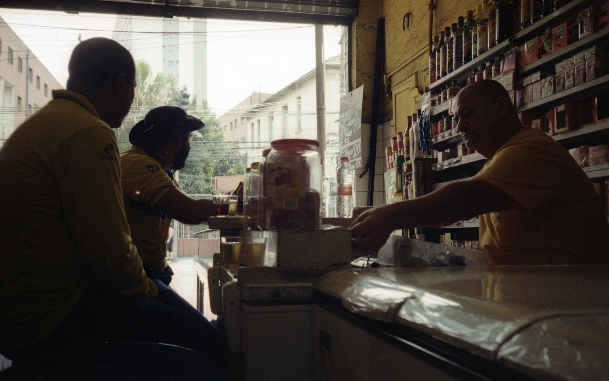

Acompanhamento
Lembro com clareza uma sensação peculiar que sentia quando criança. Na árdua empreitada artístico-didática de meus pais, não eram raros os domingos em que íamos visitar alguma exposição no centro da cidade. Com o comércio fechado, as ruas ficavam vazias e eram tomadas por um tipo específico de melancolia. A solidão era quebrada por alguns moradores de rua ou indivíduos que pareciam perambular sem muito destino. Alguns acumulavam-se em torno de pregadores na Sé, que transmitiam a palavra do Senhor de maneira efusiva e gesticulada, não muito compreendida pela minha versão criança.
Foi apenas anos depois, no intercâmbio, que percebi que esse mesmo sentimento havia retornado. Agora, porém, na forma de nostalgia. Passei a sentir falta dos passeios taciturnos no centro. São Paulo, apesar de seus problemas e tristezas, continuava sendo um lugar no qual, do alto de meus privilégios, tinha carinho e adorava morar. Na minha volta, nem a ascensão de um projeto de neofascismo tropical foi párea para desbancar o meu prazer em voltar à cidade que nasci e cresci. Esse sentimento, porém, não foi comum a parte dos meus amigos, também de volta do velho continente.
Proveniente da baixada santista e recém-chegada de terras lusitanas, uma de minhas amigas confessou-me detestar morar em São Paulo. Seu principal argumento pareceu bastante plausível: grande parte das atividades de lazer na capital paulistana exige gastar dinheiro. Não há espaços públicos como a praia de Santos e nem abundam praças graciosas como em Lisboa. Os parques são de difícil acesso e ir a esses locais requer quase um planejamento antecipado. Falta espontaneidade no lazer.
Mas sobram botecos. A busca por lugares alternativos, que supram certas carências do lazer, aproxima indivíduos e grupos de bares¹, espalhados pela cidade e de custo relativamente baixo. O lazer ligado a estes estabelecimentos explora interesses culturais dos mais diversos. Não se resumem apenas a diversão ou entretenimento hedonista, mas configuram espaços de construção e desenvolvimento de valores culturais e identitários, individuais e coletivos, como amizades, estimas, afetos. É onde atores se encontram trocando seus sentidos, cosmologias e representações do mundo, da cidade, do cotidiano².
Nessa perspectiva, as interações entre os frequentadores dos botecos estruturam uma ordem espacial, pois são vinculadas ao próprio lugar onde se realizam, e esse lugar não está isolado da vida da cidade, mas é parte de sua localidade. Ele proporciona, assim, coesão e sentimento de pertencimento que configura a extensão de sua sociabilidade. O frequentador vivenciando fidedignamente, assiduamente, com intensidade e envolvimento o ambiente do bar cria um espaço de lazer que participa das histórias e memórias da cidade³.
Os botecos, contudo, podem ser um meio termo, não só espacial, mas também temporal. O sujeito, trabalhador ou não, não o dispensa, pois já o incorporou no intervalo entre o seu fazer e seu não fazer cotidiano. Seja para conversar, jogar sinuca, assistir à TV, ou apenas saber das novidades. O boteco é, para estes, o intervalo de tempo entre a casa e a rua, o expediente e o tempo livre.
Em contraposição ao universo do trabalho, submetido à lógica do capital que programa espaços, gestos, tempos, a esfera do lazer é regida por outra lógica, aberta ao exercício de uma certa criatividade. É aí, ademais, que os trabalhadores exercitam seu direito de escolha, entre esta ou aquela forma de lazer, com estes ou aqueles colegas, em casa ou fora dela⁴.
Para dar continuidade às analogias de cardápio, pode-se dizer que, em termos de lazer, os botecos são como os acompanhamentos: a possibilidade de escolha não é das mais variadas, mas, assim como o arroz e feijão, é honesto e entretém qualquer brasileiro.
